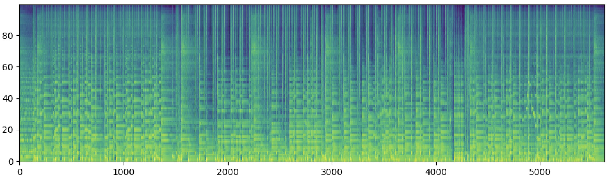

SqueezeComposer: Temporal Speed-up is A Simple Trick for Long-form Music Generation
Abstract
Composing coherent long-form music remains a significant challenge due to the complexity of modeling long-range dependencies and the prohibitive memory and computational requirements associated with lengthy audio representations. In this work, we propose a simple yet powerful trick: we assume that AI models can understand and generate time-accelerated (speeded-up) audio at rates such as 2x, 4x, or even 8x. By first generating a high-speed version of the music, we greatly reduce the temporal length and resource requirements, making it feasible to handle long-form music that would otherwise exceed memory or computational limits. The generated audio is then restored to its original speed, recovering the full temporal structure. This temporal speed-up and slow-down strategy naturally follows the principle of hierarchical generation from abstract to detailed content, and can be conveniently applied to existing music generation models to enable long-form music generation. We instantiate this idea in SqueezeComposer, a framework that employs diffusion models for generation in the accelerated domain and refinement in the restored domain. We validate the effectiveness of this approach on two tasks: long-form music generation, which evaluates temporal-wise control (including continuation, completion, and generation from scratch), and whole-song singing accompaniment generation, which evaluates track-wise control. Experimental results demonstrate that our simple temporal speed-up trick enables efficient, scalable, and high-quality long-form music generation.
1. Squeeze and Restore
We propose a simple yet effective method that leverages AI's ability to understand and reconstruct accelerated music (such as 2x, 4x, or 8x) to reduce duration and resource requirements, enabling long-form music generation while restoring the original speed at the end. Below are reconstruction samples demonstrating the effectiveness of our approach at different acceleration rates.
| 4x Speeding-up | Ground-truth | Reconstruction | |
|---|---|---|---|
| Sample 1 | |||
| Sample 2 |  |
 | |
| Sample 3 |  |
||
| 8x Speeding-up | Ground-truth | Reconstruction | |
|---|---|---|---|
| Sample 1 |  |
||
| Sample 2 | |||
| Sample 3 |  |
 |
|
2. Whole-song Accompaniment Generation
RandSong is randomly selecting an accompaniment from the accompaniment library to pair with the input vocal, FastSAG generates by cutting into 10-second segments, and SqueezeComposer is our proposed method that can generate whole-song accompaniment more quickly, coherently, and harmoniously.
2.1 The following samples are singing accompaniment generation. We compare our results with some baseline models.
| Input Vocal | |||
|---|---|---|---|
| Human Composed | |||
| RandSong | |||
| FastSAG | |||
| SqueezeComposer | |||
2.2 More samples (input vocal | generated accompaniment | mixture)
| Input Vocal | Generated Accompaniment | Mixture | |
|---|---|---|---|
| Sample1 | |||
| Sample2 | |||
| Sample3 | |||
| Sample4 | |||
| Sample5 | |||
| Sample6 | |||
| Sample7 | |||
| Sample8 | |||
| Sample9 | |||
| Sample10 | |||